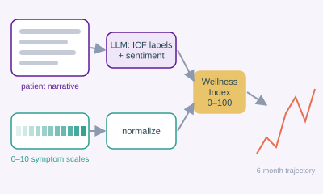

IS
Ishaan Sinha
Quantifying patient narratives to strengthen longitudinal assessment in chronic pain
Combined language-model labeling of patient-written narratives (WHO functioning categories and sentiment) with numeric symptom scales into a 0–100 Wellness Index. He validated the labels against human annotators and tracked simulated patients over six months, then went on to explore the approach further with real patients.
Published · Young Scientist Journal (Vanderbilt), 2026 Read the paper →